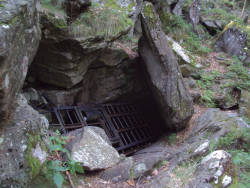

Closed Underground Tourist Sites


Show caves and show mines have a long history. Sometimes financial or political problems cause the closing of well developed objects all over the world. Sometimes the construction of motorways ruined shops, restaurants, and roadside attractions. Sometimes the site is destroyed or becomes inaccessible by a natural event. Quite common are glacier caves which have melted and became insecure through climate change. As a result there are now many former show caves, which are not open any more.
The main problem for the visitor, who reads about a cave in an older guide book, is the lack of current information! Unfortunately deceased operations do not spend money in advertisement to tell everybody they are closed, they just fade away silently. As a result many people follow a internet page, guide book or old road signs and find closed doors. In order to give a useful overview on subterranean sights open to the public, showcaves.com decided to complete it by a sort of black list, which lists all sites which are closed to the public.
 Austria
Austria Abime, Belgium
Abime, Belgium Grottes de Folx-Les-Caves, Belgium
Grottes de Folx-Les-Caves, Belgium Timmins Underground Gold Mine Tour, Canada
Timmins Underground Gold Mine Tour, Canada Grotte du Crête de Vaas, Switzerland
Grotte du Crête de Vaas, Switzerland- Quarzsandbergwerk im Krähstel, Switzerland
- Eispavillon Mittelallalin, Switzerland
- Macaque Cave, China
- Cueva de Damas, Costa Rica
- Ledová Jeskyně Naděje, Czech Republic
- Cova do Rei Cintolo, Spain
- Cueva de Covaciella, Spain
- Cueva de la Lastrilla, Spain
- Cuevo del Llanos, Spain
- Retretti, Finland
- Loizos Cave, Ithaka, Greece
- Spílaio Nymfón, Ithaka, Greece
- Alepotrypa, Greece
- Ðurovića Jama, Croatia
- Cave Bar More, Croatia
- Jama u Predolcu, Croatia
- Špilja Šipun, Croatia
- Malcham Salt Cave, Israel
- Buco del Piombo, Italy
- Grotta Tanella, Italy
- Nonsuch Caves, Italy
- Byakuren-do, Japan
- Nanaori shonyudo, Japan
- Diamond cave, Japan
- Daimasu shonyudo, Japan
- Kurasawa Shonyudo, Japan
- Mitsugo shonyudo, Japan
- Yozawa shonyudo, Japan
- Aoiwa shonyudo, Japan
- Mabaj Cave, Lebanon
- Temna Peštera, North Macedonia
- Dalen-Kjørholt Gruve, Norway
- Gruve 7, Norway
- Te Anaroa Cave, New Zealand
- Al Kittan Cave, Oman
- Grotte des Chauves-souris, Tunisia
- Malinta Tunnel, The Philippines
- Pukaway Cave Underground Lake, The Philippines (?)
- Gruta do Zambujal, Portugal
- Grutas de São Vicente, Portugal
- Tašmajdanska pećina, Serbia
- Bergrum Boliden, Sweden
- Akarsu Köyü Mağarası, Turkey
- Yerküpe Mağarası, Turkey
- Çukurören Yeraltı Şehri, Turkey
- Động Thiên Long, Vietnam
 Search DuckDuckGo for "Closed Underground Tourist Sites"
Search DuckDuckGo for "Closed Underground Tourist Sites"
 Index
Index Hierarchical
Hierarchical Countries
Countries Maps
Maps{kind=link}